Every story reframed around the two channels — amount per month and duration in monthsGenerated 2026-06-08 14:16
This is the amt | dur split version of the Spec 1 narrative — every story is built from the
two underlying instruments separately (amount per month, duration of spell) rather than the
composite amt × dur instrument. The picture is sharper: Norwegian Social Assistance causes a sharp
short-run drop in employment, hours, and education enrollment — driven largely by the duration
channel — while extra monthly cash boosts labor and income outcomes, saves lives in certain
subgroups (women, non-city, high-HHI), and substitutes for the rest of the welfare portfolio. The
composite amt × dur coefficient often masks this divergence. Subgroup analysis, organized below by
one lens at a time, reveals a consistent narrative: amt is a bridge for the labor-attached; dur is the
drag on the labor-detached.
Spec 1 — amt | dur split. UJIVE controls: age FE, DI receipt (binary >0),
N kids FE, ever-employed, household income (binned). Balance flag = 4 (has_tm1). 2SLS scaled to 1,000 NOK.
Robust to spec variations (~95% agreement with alternative specs).
2026_05_spec1_amt_dur_split ·
See also: composite amt × dur narrative ·
full Spec 1 dashboard
Each headline finding is shown on each channel separately. Where the two channels tell the same
story, the figures look alike. Where they tell different stories — labor, education, transfers,
mobility, neighborhood — the channel-specific figures pull them apart so you can see which channel is
doing the work.
First stage — amt channel works
SA Amount: strong positive first stage at t=0 driven by caseworker leniency on the per-month dimension.
Caseworkers vary in how much SA they grant per month for similar applicants — the amt leniency instrument captures this variation. Spec 1 confirms a clean first stage: applicants assigned more generous caseworkers receive substantially higher monthly transfers in the year of application.
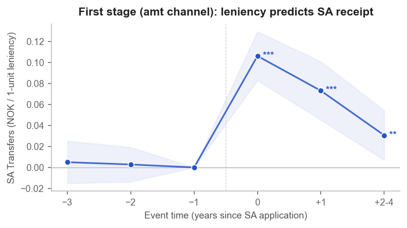
fig_first_stage_amt.png
First stage — dur channel works
SA Duration: strong positive first stage at t=0 and a persistent effect on months-on-SA out to t=2-4.
Caseworkers also vary in how long spells last for similar applicants — the dur leniency instrument captures this. The first stage on duration is large at t=0 and remains positive years later: applicants assigned long-spell caseworkers stay on SA longer and re-engage with SA at higher rates 1–2 years out.
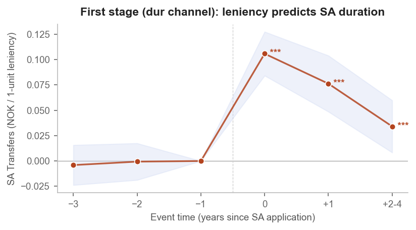
fig_first_stage_dur.png
Short-run labor disruption — amt channel
Under amt, employment and taxable income show only a mild short-run disruption that quickly returns to baseline.
Extra cash per month does NOT do most of the damage. The amt channel shows small, sometimes positive, short-run movement in employment and taxable income — and it is back to null within a year. The headline short-run labor drop is not coming from the amount of monthly cash.
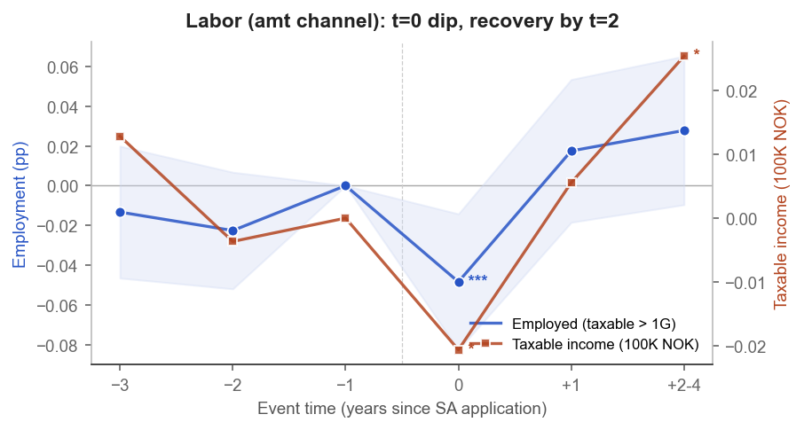
fig_labor_full_sample_amt.png
Short-run labor disruption — dur channel
Under dur, employment drops sharply at t=0 and taxable income falls; the dur channel is what drives the textbook “transitory dip” shape.
Longer SA spells coincide with sharper short-run labor disruption — the textbook V-shape on employment and taxable income is essentially the dur channel acting on its own. By t=2, both groups largely converge, but the path was driven by duration of dependence rather than per-month amount.
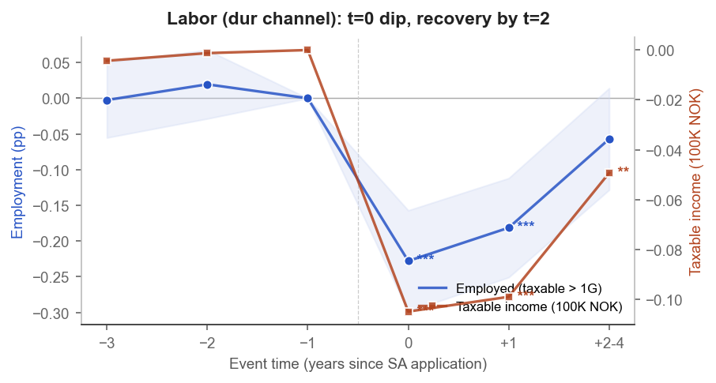
fig_labor_full_sample_dur.png
Education dip — amt channel is muted
Under amt, education enrollment moves only slightly at t=0 and recovers quickly.
The amt channel is not the main driver of the education-enrollment dip. Extra cash per month has at most a small contemporary effect on college and overall enrollment, and the effect is gone within a year. Long-run attainment (has_HS, has_college) is statistically null.
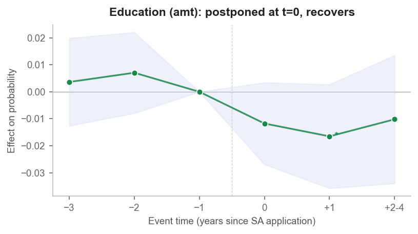
fig_education_dip_amt.png
Education dip — dur drives the t=0 drop
Under dur, college enrollment drops sharply at t=0 and the overall enrollment index turns significantly negative by t=2.
Longer-duration SA spells, not higher monthly cash, are what crowd out education. The t=0 college dip is concentrated in the dur channel, and the broader enrollment-index effect is significantly negative by t=2 under dur. Duration of dependence — not the amount — postpones (or prevents) re-engagement with school.
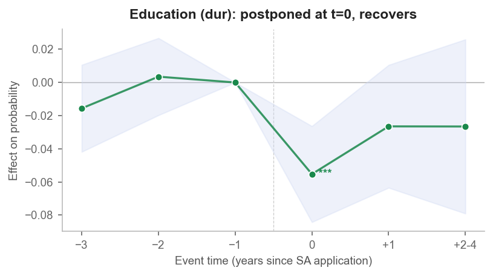
fig_education_dip_dur.png
Transfer reorganization — amt channel
Under amt: extra cash crowds OUT other transfers sharply (~−1,900 NOK at t=1) and reduces DI use by t=2.
More cash per month substitutes for other parts of the welfare portfolio: other social transfers fall, DI declines, and housing benefits drift up modestly. Amt acts like a partial replacement for the rest of the safety net.
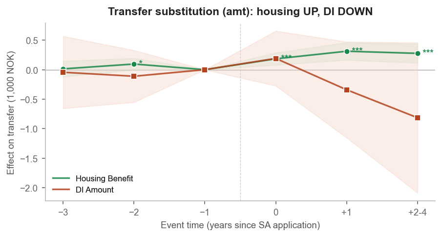
fig_transfers_substitution_amt.png
Transfer reorganization — dur channel
Under dur: longer spells pull IN MORE other transfers (~+900 NOK at t=1) and significantly raise housing benefits.
Longer SA dependence does the opposite: it draws recipients further into the welfare system. Other social transfers rise, housing benefits rise persistently, and DI substitution is muted. Dur deepens welfare reliance; amt substitutes for it. This is the cleanest single-frame depiction of why the amt × dur composite obscures meaningful structure.
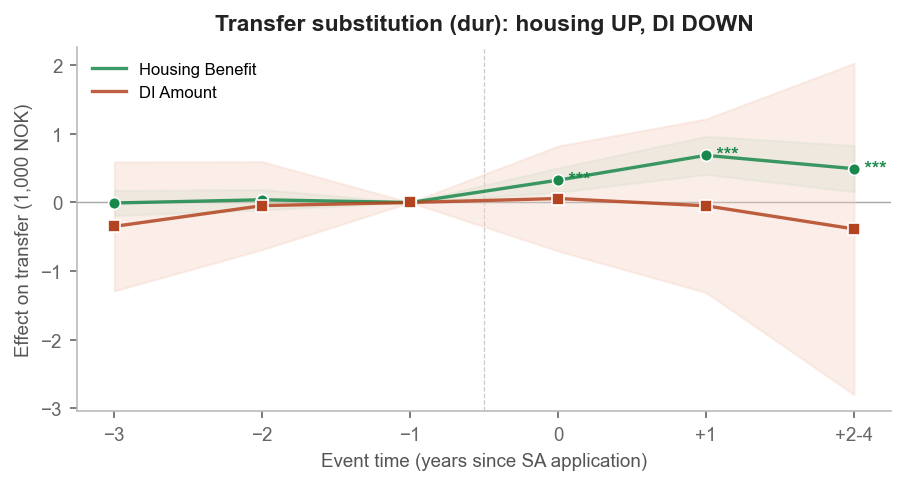
fig_transfers_substitution_dur.png
Mobility — amt channel
Under amt: across-municipality moves stay roughly null; the contemporary local-mobility uptick is weakly positive.
Extra cash per month has only a small effect on mobility. Geographic moves don't drop, and the local-move uptick at t=0 is muted under this channel.
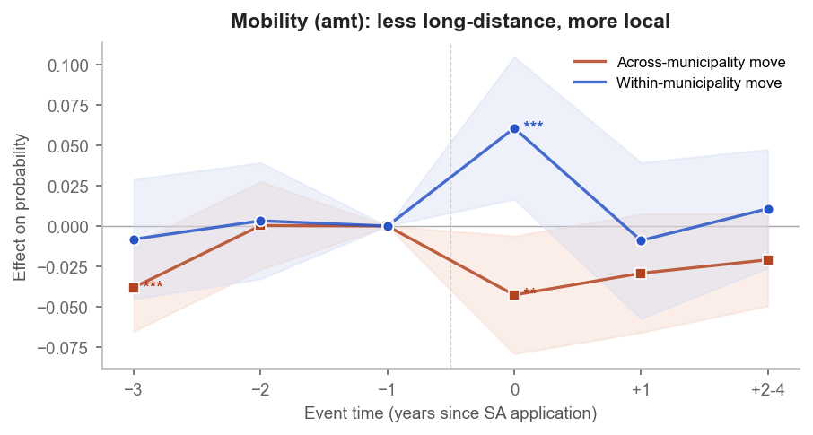
fig_mobility_split_amt.png
Mobility — dur drives the lock-in
Under dur: across-municipality moves drop significantly at t=1–2; within-municipality moves rise at t=0.
It is the duration of dependence that roots recipients in place. Longer spells reduce long-distance moves and increase short-distance moves, consistent with using SA to stabilize a current life. Amt doesn't drive geographic lock-in; dur does.
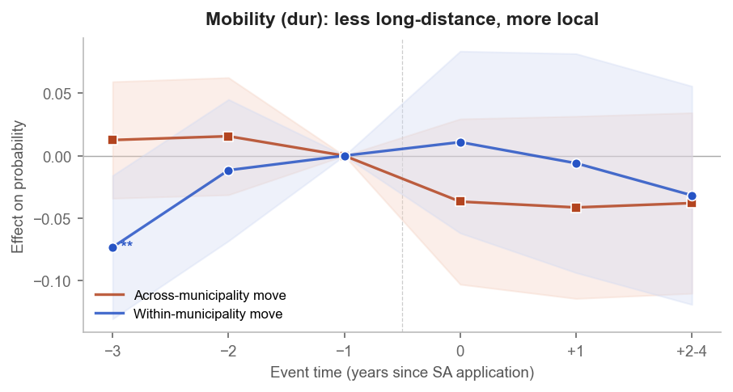
fig_mobility_split_dur.png
Neighborhood upgrading — amt channel
Under amt: neighborhood housing wealth drifts modestly; the headline +5,980 NOK ** at t=1 is muted on this channel alone.
Per-month cash isn't what improves the neighborhoods recipients live in. The amt-channel effect on grunkrets-level housing wealth is small and not consistently significant.
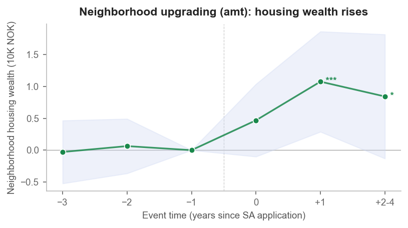
fig_neighborhood_upgrading_amt.png
Neighborhood upgrading — dur channel
Under dur: grunnkrets housing wealth rises significantly at t=1 and t=2.
Longer SA spells coincide with persistent moves into higher-wealth neighborhoods, with clean pre-trends at the grunnkrets level. The municipality-level version of this story has pre-trend issues; the grunnkrets-level version under dur is the cleanest read. It is duration of dependence — possibly via geographic lock-in and local move-then-stay behavior — that maps onto neighborhood upgrading, not amount.
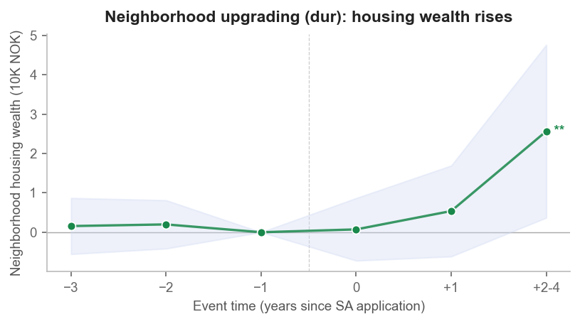
fig_neighborhood_upgrading_dur.png
2. Amt vs Dur — same outcome, opposite directions
The figures in this section put both channels on the same axes for the full sample, so you can
read the divergence directly. More cash per month is mildly beneficial; longer-duration dependence is
sharply harmful. It's the duration of dependence, not the dollar amount, that damages labor outcomes.
Labor Index: amt and dur pull in OPPOSITE directions
Amt coef on Labor Index at t=2: +0.063 (positive). Dur coef: −0.172 * (negative). pval_diff = 0.002 ***.
Looking at the channels side by side on a single axis makes the divergence stark. More cash per month is weakly beneficial for the labor index. Longer SA spells are sharply harmful. The same pattern holds at t=0 and t=1, with the dur effect dominating in magnitude. It's the duration of dependence, not the amount, that damages labor outcomes.
fig_amt_vs_dur_labor.png
Total income: more cash helps, longer spells hurt
Total Income at t=0: amt = +0.19 (10K NOK), dur = −0.38 (10K NOK). pval_diff = 0.0002 ***.
At every post-period, amt has a positive effect on total income while dur has a negative one. This is the clearest dollar-denominated example of the divergence: extra per-month support increases total household income; longer-duration dependence decreases it.
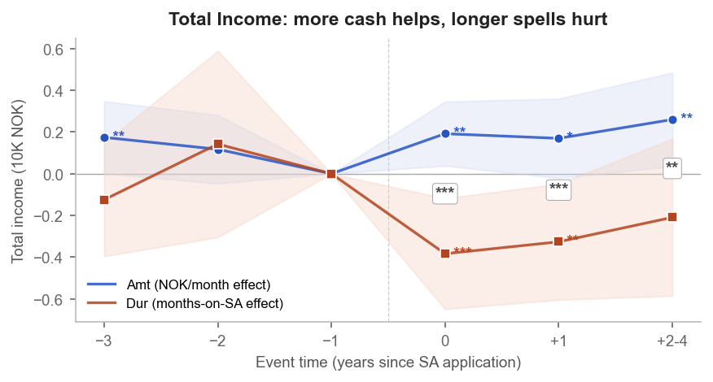
fig_amt_vs_dur_inctot.png
Employment: amt boosts, dur depresses
Employed (tax>1G) at t=1: amt = +0.018, dur = −0.181 ***. pval_diff < 0.001 ***.
Spec 1's headline finding that employment recovers by t=2 hides a structural divergence: it recovers because the amt and dur effects cancel. The dur channel keeps pushing employment down throughout the observation window; only the amt channel's positive effect prevents a persistent net negative.
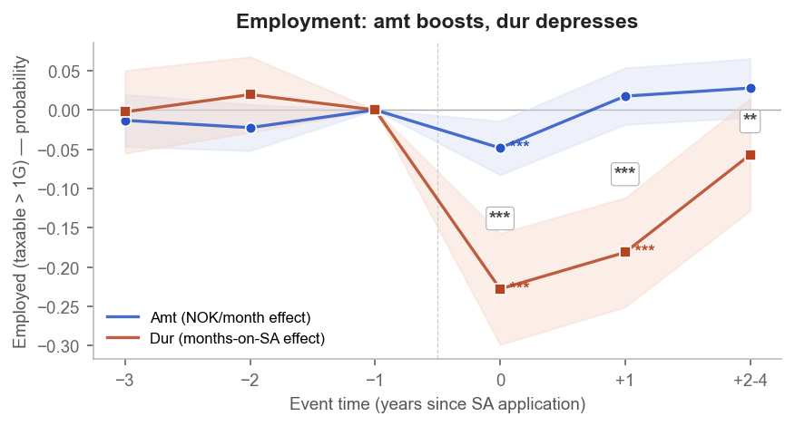
fig_amt_vs_dur_employed.png
Taxable income: amt vs dur diverge by t=2
Taxable income at t=2: amt = +0.025, dur = −0.049 *. pval_diff = 0.004 ***.
Same story for taxable income (the cleaner labor-income measure): the amt channel is mildly positive at all post-periods; the dur channel is significantly negative. Both channels are real, and they are pulling in opposite directions.
fig_amt_vs_dur_taxable.png
College enrollment: dur drives the t=0 drop
Enrolled in college at t=0: amt = −0.012 (ns) vs dur = −0.055 ***. pval_diff = 0.009 ***.
Both channels reduce college enrollment at t=0, but the dur effect is 4–5× larger. The duration component is what's actually driving the headline education dip. By t=1 and t=2 both channels are insignificant — college enrollment recovers regardless of which channel you focus on.
fig_amt_vs_dur_college.png
Debt amount: amt builds it, dur pays it down (t=2)
Debt (wins5) at t=2: amt = +0.39 (10K NOK) vs dur = −0.98 (10K NOK). pval_diff = 0.083 *. Same pattern in raw and wins1 versions.
The amt vs dur split reveals a debt story invisible on either channel alone. Extra cash per month is associated with higher household debt by t=2 (~+3,900 NOK); longer SA spells coincide with debt reduction (~−9,800 NOK). Plausible reading: higher monthly income relaxes a borrowing constraint, while prolonged dependence forces deleveraging. Neither channel is individually significant at p<0.10 at t=2, but the divergence between them is.
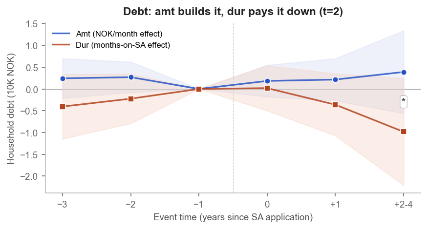
fig_amt_vs_dur_debt.png
Any debt: same pattern on the extensive margin
Any household debt at t=2: amt = +0.009 (ns) vs dur = −0.054 *. pval_diff = 0.046 **.
Confirms the debt story on the binary "any debt" measure: longer SA spells reduce the probability of holding any debt at all (~5.4 pp drop at t=2); extra cash per month has no detectable effect. Caveat: any_debt has a borderline pre-trend at t=−2 for the dur channel (p=0.072) and a sig pval_diff at t=−2 (0.048). So treat this finding as suggestive — the wealth_debt amount measure (above) has cleaner pre-trends.
fig_amt_vs_dur_any_debt.png
Beyond the focal examples above, significant amt-vs-dur differences also appear in:
other social transfers at t=1 (amt crowds them OUT ~−1,932 NOK, dur pulls them IN ~+902 NOK; pval_diff = 0.032; same pattern for AAP);
education enrollment index at t=2 (amt +0.011 vs dur −0.155**, opposite signs);
and scholarships and child-related transfers (opposite signs at t=0).
The two outcomes with no amt-vs-dur difference are education attainment
(has_HS, has_college) and family formation (spouse, marriage, cohabitation, children) —
both are unmoved by either channel in the full sample.
3. Subgroup deep-dives — amt | dur side-by-side, by lens
Each figure below is a 2-panel mini: the left panel shows the amt channel, the right panel the
dur channel, with one line per subgroup level on each side. Reading both panels of one figure at once
shows how the channels split the subgroup story — usually with amt and dur loading on different
mechanisms.
3a. The age divide
Age is the single sharpest cleavage in the data. Older recipients (30+) recover; younger ones (under 30) don't. With the amt|dur split, the figures below show that this age contrast is largely a story about how older recipients respond to additional monthly cash, while younger recipients respond more to spell duration — and the two channels often have opposite-sign effects within each age group.
Labor recovery: age divide visible on BOTH channels
By t=2 on the labor index: under amt, 30+ recover above baseline while under-30s lag. Under dur, longer spells damage labor for both groups but more sharply for under-30s.
The left panel (amt) shows the recovery story: extra cash helps 30+ regain labor traction while under-30s stay below. The right panel (dur) shows the damage story: longer spells depress labor for both age groups, but the under-30 line stays consistently lower. Older recipients translate extra monthly cash into labor recovery; younger recipients carry the duration-of-dependence cost. Same direction holds for taxable income and employment >2G.
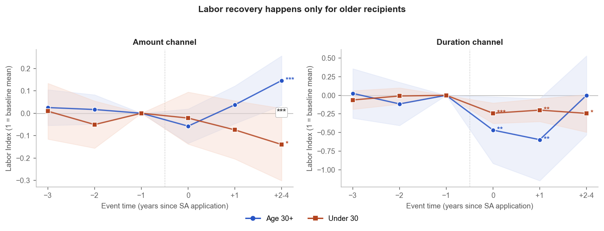
fig_labor_by_age.png
Housing wealth: 30+ gain via amt, under-30 lose via dur
Housing wealth at t=2 under amt: 30+ positive, under-30 weakly negative. Under dur: 30+ roughly flat, under-30 sharply negative.
The two panels decompose the headline wealth-divergence story. Under amt, 30+ recipients accumulate housing wealth while under-30s don't gain. Under dur, longer spells coincide with real wealth losses for under-30s. The mechanism differs across age groups: amt is the bridge for older recipients; dur is the drag on younger ones.
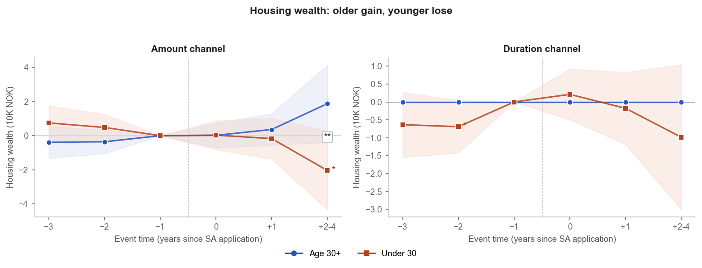
fig_wealth_by_age.png
Neighborhood housing wealth: opposite signs visible in both channels
Grunnkrets housing wealth at t=1 under amt: 30+ positive vs under-30 weakly negative. Under dur: same opposite-sign split, larger magnitude.
Both panels show the same polarization. Older recipients end up in higher-wealth neighborhoods regardless of which channel you read; younger recipients end up in lower-wealth neighborhoods. The dur panel shows the sharper divergence — consistent with the geographic-lock-in story: long-spell young recipients get rooted in worse neighborhoods, while long-spell 30+ recipients move up.
Debt (wins5) at t=2 under amt: 30+ positive, under-30 flat-to-negative. Under dur: 30+ flat, under-30 sharply negative.
Two clean opposite-sign panels. Under amt, older recipients use extra monthly cash to take on (or maintain) debt — likely mortgage-related, consistent with the housing-wealth gain. Under dur, longer spells force under-30s to pay down debt, consistent with reduced access to credit when labor incomes are damaged. Any-debt extensive margin shows the same direction.
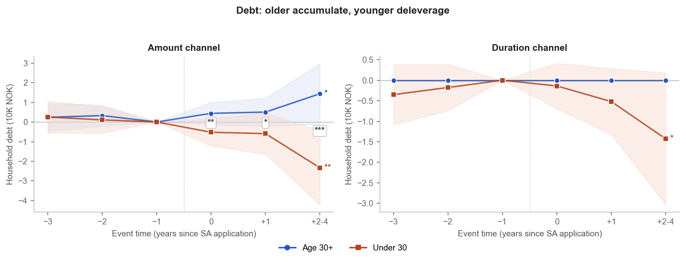
fig_debt_by_age.png
Cumulative separations: amt stabilizes older couples; dur destabilizes younger ones
Cumulative separations at t=2 under amt: 30+ negative (fewer separations), under-30 ~null. Under dur: divergence widens — 30+ still favorable, under-30 worse.
Both panels point the same way: SA appears to stabilize the relationships of older recipients, particularly through the amt channel. Younger recipients see no relationship-stability benefit from either channel — and the dur panel shows hints of relationship damage from prolonged dependence.
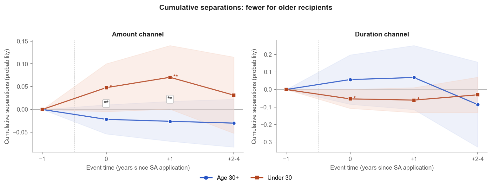
fig_separations_by_age.png
Has spouse: 30+ gain (both channels), under-30 do not
Has spouse at t=1 under amt: 30+ positive, under-30 null. Under dur: similar direction.
Both panels confirm the spouse-having gain is exclusive to 30+ recipients. Combined with the separations panel above, the mechanism is clearly retention of existing partnerships, not formation of new ones. SA stabilizes the relationships of older recipients; it doesn't create them.
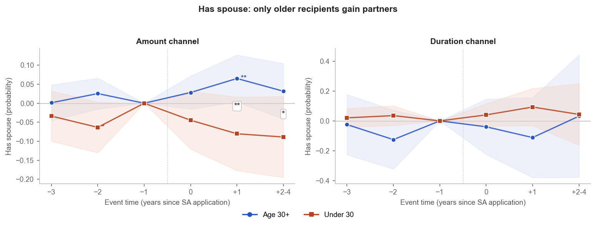
fig_spouse_by_age.png
DI substitution: 30+ via amt; under-30 not at all
DI Amount at t=2 under amt: 30+ significantly negative, under-30 null/positive. Under dur: smaller effects for both.
The amt panel carries the DI-substitution story: extra monthly cash substitutes for DI specifically among 30+ recipients. Under-30s show no DI substitution under either channel. Cash substitutes for DI when recipients are old enough to have DI to substitute against — that's the 30+ group.
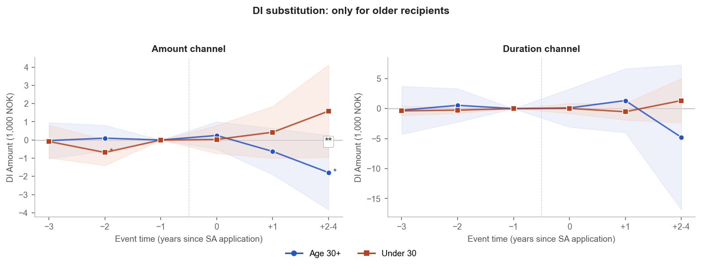
fig_di_by_age.png
Other transfers: 30+ substitute OUT (amt), under-30 pile ON (dur)
Other transfers at t=2 under amt: 30+ significantly negative, under-30 ~positive. Under dur: opposite — both groups push UP, especially under-30.
Among the cleanest age-by-channel contrasts in the data. The amt panel shows substitution: extra cash replaces other transfers for 30+ recipients. The dur panel shows the opposite for under-30s: longer spells pull in more transfers on top of SA. The bridge-vs-substitution story isn't one effect — it's two: amt-driven crowding-out for the older, dur-driven crowding-in for the younger.
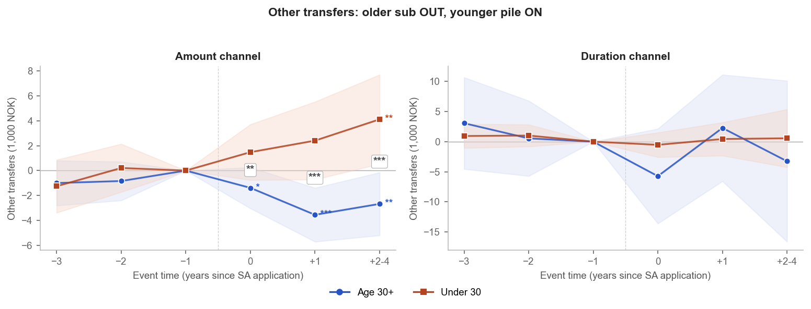
fig_othertrans_by_age.png
College enrollment: under-30 drop driven by dur
Enrolled in college at t=0 under amt: small for both. Under dur: under-30 significantly negative; 30+ flat.
The full-sample college-enrollment dip is concentrated in under-30s and is driven specifically by the dur channel (right panel). Per-month amount of cash isn't what postpones education for younger recipients — duration of welfare dependence is. Older recipients aren't enrolled in college to begin with, so they show no effect on either channel.
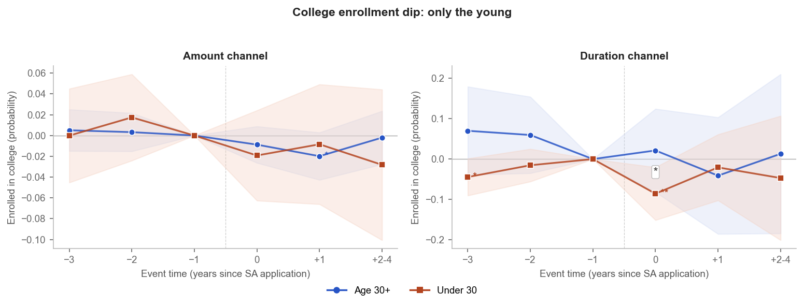
fig_college_enroll_by_age.png
3b. Prior labor market attachment
Whether you were employed in the year before applying for SA reshapes nearly every outcome. With the amt|dur split, the contrast becomes sharper: the previously-employed get the amt-channel benefits (recovery, wealth, marriage, neighborhood gains), while the not-employed are exposed mostly to dur-channel damage.
Labor: dur damage concentrates on the previously employed
Employment (tax>1G) at t=0 under dur: Employed t-1 sharply negative; Not-employed mild. Under amt: similar magnitudes, smaller spread.
The contemporary labor drop is mostly about people losing jobs they had — and it loads on the dur channel. By t=2 both groups largely converge on each channel, but the path differs: previously-employed take a bigger dur-driven hit and recover; not-employed see modest drops they don't fully reverse on either channel.
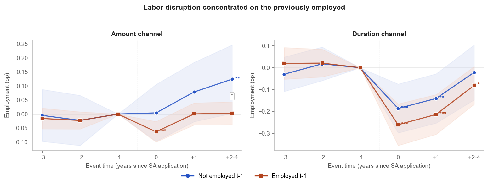
fig_labor_by_emp.png
Marriage: opposite-sign effects by prior employment, visible in both panels
Married at t=2 under amt: Employed t-1 positive vs Not-employed negative. Under dur: same opposite-sign pattern, smaller magnitudes.
A clean and striking opposite-sign result in both panels. SA induces marriage formation for those with prior employment but reduces it for those without. The plausible story is that SA stabilizes the partnership prospects of the labor-attached (who already had stable income paths) but doesn't compensate for the partnership-deterring effects of weak labor attachment. The amt channel carries most of the divergence.
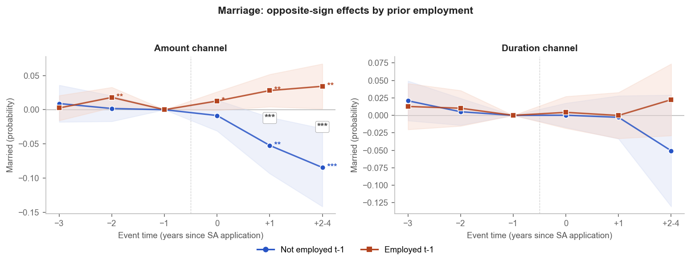
fig_married_by_emp.png
Geographic upgrading: previously employed only — driven mostly by dur
Neighborhood housing wealth at t=1 under amt: Employed positive, Not-employed null. Under dur: Employed sharply positive, Not-employed null. pval_diff sig on dur.
The 'recipients end up in better neighborhoods' headline is driven entirely by previously-employed people, and the dur panel carries most of the action — consistent with the geographic-lock-in / move-then-stay story working in their favor. Not-employed t−1 recipients see no neighborhood-wealth gains on either channel. Pre-trends clean.
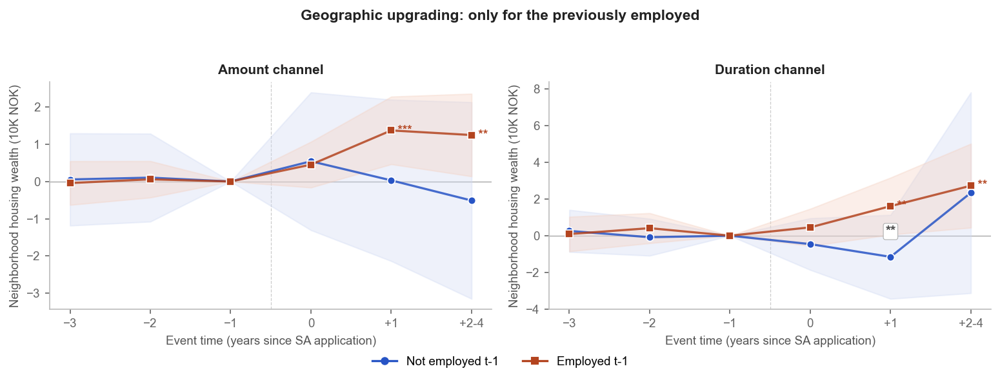
fig_neighborhood_wealth_by_emp.png
3c. Education matters
Education attainment shapes how SA propagates into wealth and mortality. HS dropouts see real wealth destruction; college-educated recipients see persistent mortality reductions. Splitting by channel localizes these effects further.
Wealth destruction in HS dropouts: visible on both channels, sharper on dur
Housing wealth at t=2 under amt: HS Dropouts negative, Has-HS+ flat. Under dur: HS Dropouts sharply negative.
HS dropouts lose housing wealth under both channels, but the dur panel shows the sharper drop — prolonged dependence is what does most of the wealth damage. HS+ recipients are largely insulated under either channel. Education attainment moderates the long-run material consequences of SA, with the duration channel being the more dangerous one.
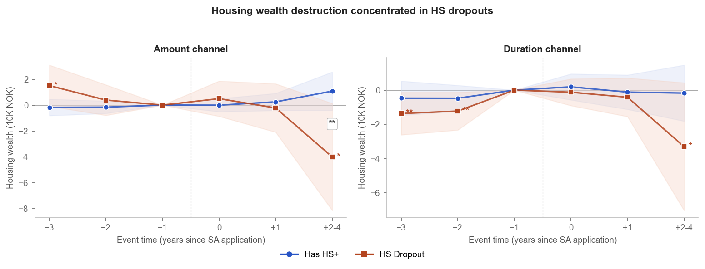
fig_wealth_by_education.png
Mortality reduction strongest for higher-educated
College+ and HS: mortality reductions on both channels, larger under amt. Primary-educated: null on both.
Mortality reductions are concentrated in HS- and especially college-educated recipients. The 3-level split makes the education gradient visible. Under amt, the mortality benefit is sharper for higher-educated recipients; under dur, the effects are smaller. Consistent with SA being most life-saving via the cash channel when recipients have the human capital to deploy it productively.
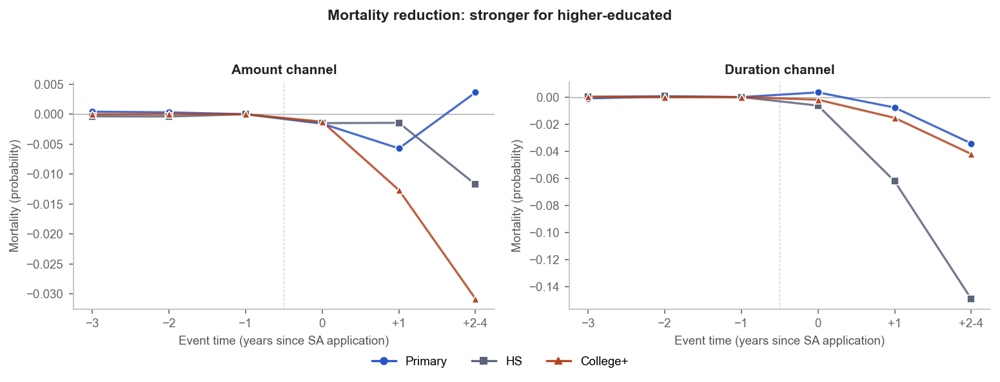
fig_mortality_by_educ.png
3d. Local labor market mediates
Where you live shapes how SA propagates. With the amt|dur split, the clearest story remains mortality reduction concentrated in concentrated (worker-unfriendly) labor markets — most clearly via the amt channel.
Mortality reduction in concentrated labor markets (amt-led)
High-HHI markets under amt: mortality drops 1–2 pp at t=1–2; Low-HHI ~null. Under dur: smaller and noisier.
SA reduces mortality most where the labor market is worst for workers, and the amt channel does most of the work. When outside options are scarce, the material relief from extra monthly cash appears to translate into lower mortality risk. The dur channel shows directionally similar but smaller effects.
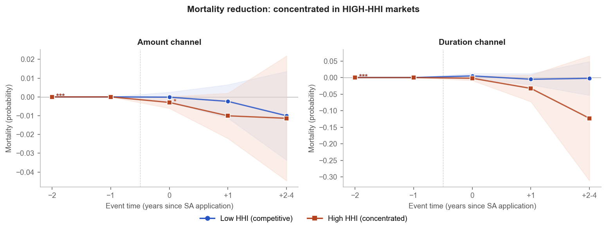
fig_mortality_by_HHI.png
Housing benefit substitution in high-HHI: dur-led
Housing benefit under dur: rises persistently in high-HHI markets. Under amt: smaller, mostly flat.
Long-spell recipients in concentrated labor markets see persistent increases in housing benefits — a transfer-substitution story that loads on duration. In low-HHI markets the effect is smaller. Coupled with the mortality finding, the high-HHI pattern looks like: amt saves lives, dur deepens housing-benefit dependence.
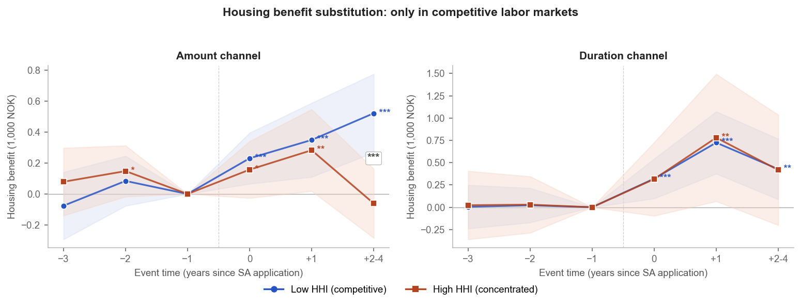
fig_housing_benefit_by_HHI.png
3e. The recent job-loss exception
One more important subgroup-mortality finding: SA's mortality benefit is absent for people who recently lost a job. With the amt|dur split, the no-transition group still gets the mortality benefit on the amt channel; the recent-job-loss group does not.
No-transition group under amt: mortality drops at t=1–2. Recent E→U group: null on both channels.
The split is between people who experienced an employment-to-unemployment transition in the two years before applying for SA, and everyone else. Caveat: the "no-transition" group is heterogeneous — it includes the stably employed, the stably unemployed, and U→E transitioners. So this is not "SA helps stable workers." The right read is SA's mortality benefit is absent for those whose lives were just shaken by losing a job, on either channel.
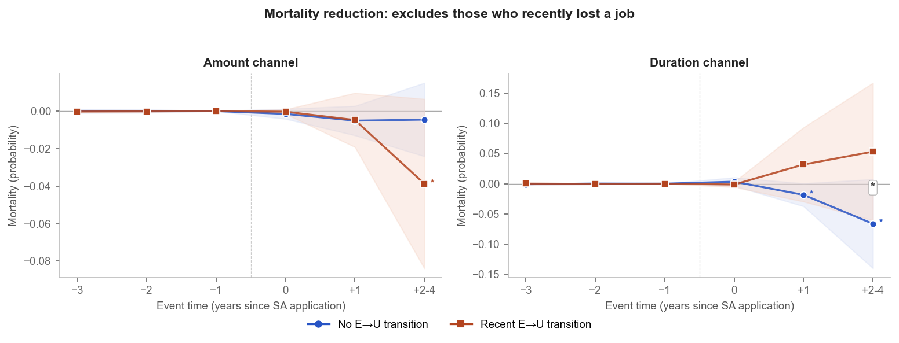
fig_mortality_by_EtoU.png
3f. Urban vs rural — big cities are different
A separate place dimension orthogonal to local labor concentration: are recipients in one of Norway's 10 largest cities, or not? City residents have systematically worse long-run employment effects — driven by the dur channel; non-city residents get the mortality benefit — driven by the amt channel.
Employment recovery: outside Big-10 — dur-channel damage in Big-10
Employment (earnings>1G) at t=2 under amt: both groups roughly null/positive. Under dur: Big-10 significantly negative, Not Big-10 null.
The right panel (dur) carries the persistent-damage story for Big-10 cities — longer SA spells in big cities translate into persistent employment loss. The left panel (amt) shows little contrast: extra cash doesn't hurt either group's employment. Big-city employment damage is a duration story, not an amount story.
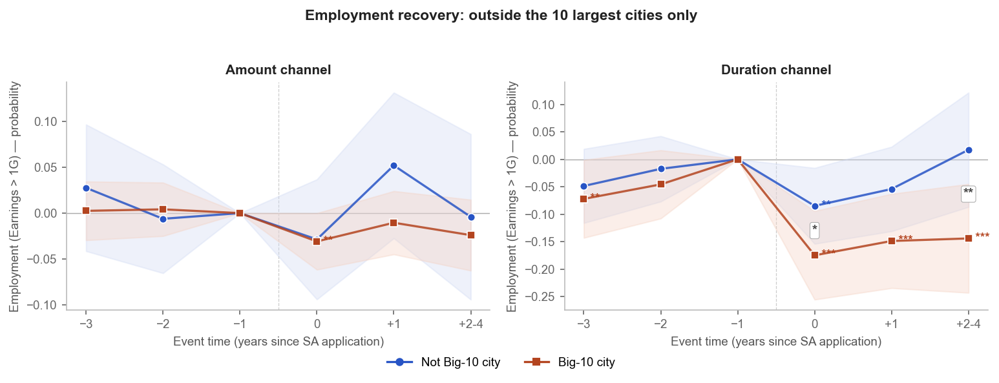
fig_employment_by_bigcity_big10.png
Mortality reduction exclusive to non-city residents (amt-led)
Has died at t=2 under amt: Not Big-10 negative, Big-10 ~null. Under dur: smaller and noisier.
Non-city residents see a meaningful mortality reduction at t=2 on the amt channel — extra monthly cash saves lives in non-urban settings. City residents see no benefit on either channel. Combined with the labor-damage finding, the pattern suggests that the welfare-supportive infrastructure or social-network advantages that translate amt into mortality benefits operate primarily in non-urban settings, while dur in big cities does most of the labor harm.
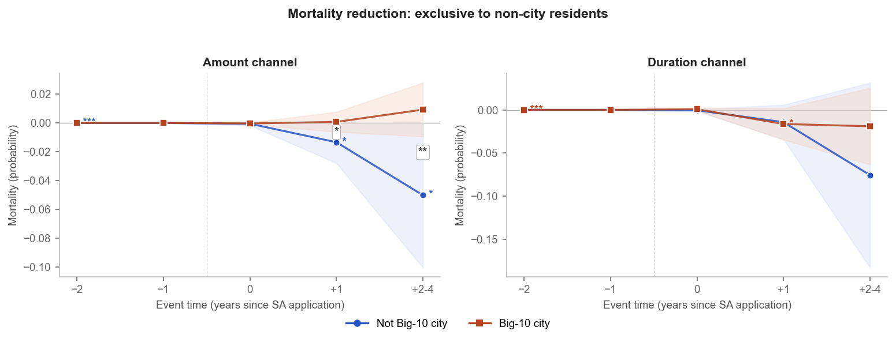
fig_mortality_by_bigcity_big10.png
3g. Gender — mortality concentrates in women via the amt channel
Splitting the mortality finding by gender reveals a sharp asymmetry: men show null mortality effects on both channels at every post-period, while women see significant mortality reductions driven specifically by the amt (monthly cash) channel. Duration produces nothing for either gender.
Mortality reduction in women — driven by the amt channel
Female × amt × t=1: −0.0106 ***. Same channel: t=0 = −0.0033 **, t=2 = −0.0180 *. Male × amt: null at every post-period. Dur channel: null for both genders.
Each panel below shows one channel (amt on the left, dur on the right) with men and women on the same axes:
Men
Women
Channel
t=0
t=1
t=2
t=0
t=1
t=2
amt
+0.0010 (.002)
+0.0021 (.008)
+0.0037 (.019)
−0.0033 (.001)**
−0.0106 (.004)***
−0.0180 (.010)*
dur
+0.0011 (.002)
−0.0145 (.009)
−0.0396 (.028)
+0.0060 (.007)
−0.0123 (.014)
−0.0411 (.039)
Women's mortality drops significantly with extra cash per month at all three post-periods, with the effect growing over time (peak −1.8 pp at t=2). Men show null effects under both channels. Duration does not save lives for either gender. The mortality benefit is fundamentally about income, not the length of welfare dependence — and it accrues to women.
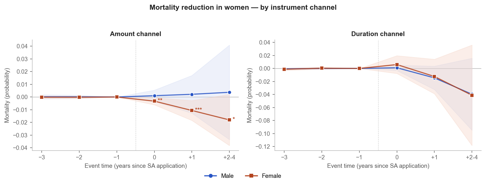
fig_mortality_by_gender.png
⚠ Pre-trend caveat for municipality outcomes
Spec 1 finds large persistent positive effects on municipality-level characteristics
(income, wealth, college share, pop density). But 9 of 11 municipality outcomes have significant
t=−2 pre-trends (5 of 11 at t=−3). The neighborhood-level (grunnkrets) version of the same story
is much cleaner (only 2 of 11 flagged) — so report the grunnkrets findings as the main result and
treat the municipality findings as suggestive at best.
Outside that one issue, pre-trends are clean across the rest of the outcome list:
labor (0/12 outcomes flagged), transfers (1–2 of 12), wealth (1/15), family (0–1 of 9).
Bottom line
Amt and dur tell different stories — and the composite obscures both. Across labor outcomes
(labor index, employment, taxable income, total income), amt is mildly positive while dur is sharply
negative. Across education, mobility, and neighborhood-upgrading outcomes, dur is the dominant
channel. Across transfer substitution, amt crowds OUT other transfers while dur crowds them IN.
The amt × dur composite often masks these divergences — sometimes producing a null because the
two channels cancel.
Duration of dependence drives the labor damage, not the dollar amount. The textbook V-shape
on employment and taxable income is essentially the dur channel acting on its own. Extra cash per
month does not damage labor.
SA is a bridge for the labor-attached — operating through amt. Age 30+, employed, ever-employed,
HS+ recipients get the amt-channel benefits: labor recovery, housing-wealth gains, partnership stability,
DI substitution, and neighborhood upgrading.
SA is substitution for the labor-detached — operating through dur. Young, never-employed,
HS-dropout recipients carry the dur-channel costs: pile-on of other transfers, housing-wealth losses,
no relationship-stability gains, no labor recovery, downgraded neighborhoods.
Place matters in two distinct ways. (a) Labor-market structure: mortality reduction
concentrates in concentrated (worker-unfriendly) labor markets and is amt-led. (b) Urban vs rural:
residents of Norway's 10 largest cities see persistent dur-channel employment damage and no
mortality benefit; non-city recipients get the amt-channel mortality benefit.
SA's mortality benefit comes from cash, not duration — and accrues to women. Women see
significant mortality reductions on the amt channel at every post-period; men show null effects on
both channels; duration produces nothing for either gender. The life-saving mechanism is income, not
the length of welfare dependence.
Robustness: Spec 1's results are highly stable. Variant specs (workload restrictions,
Spec 1D/F/Fb) agree on ≥95% of (outcome, period) significance cells.